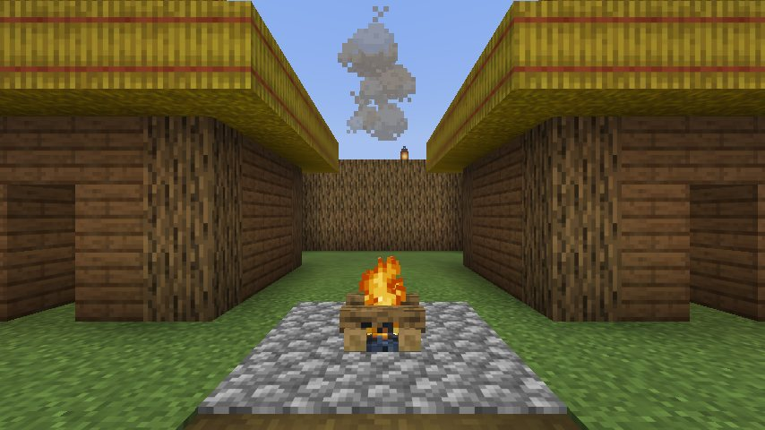
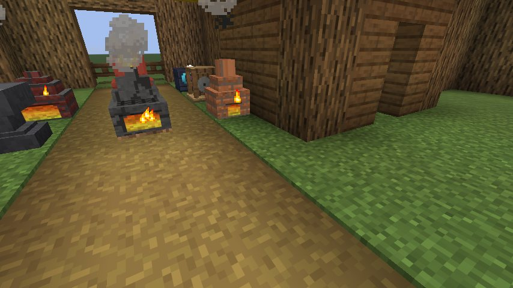
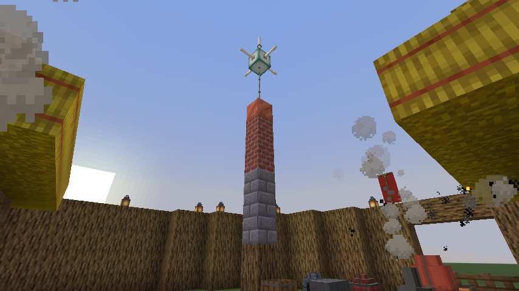
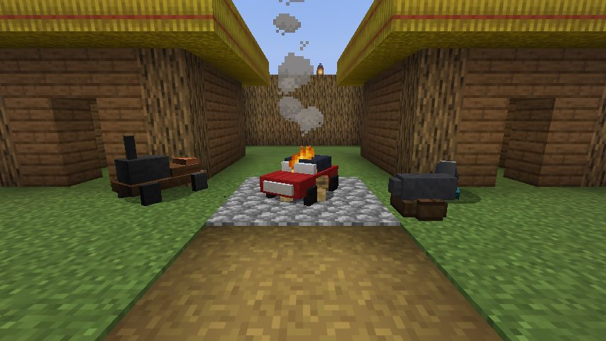
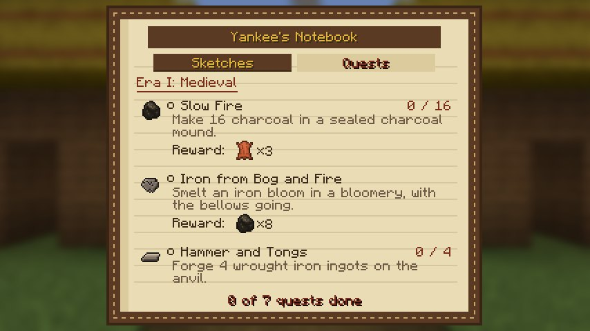
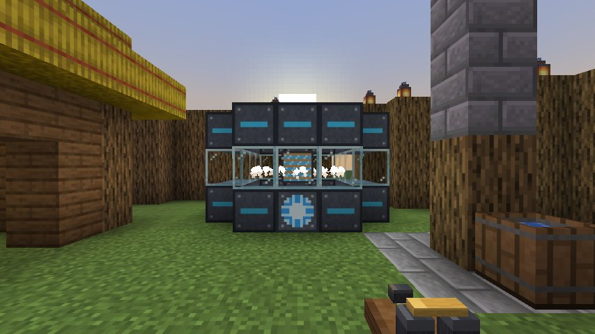
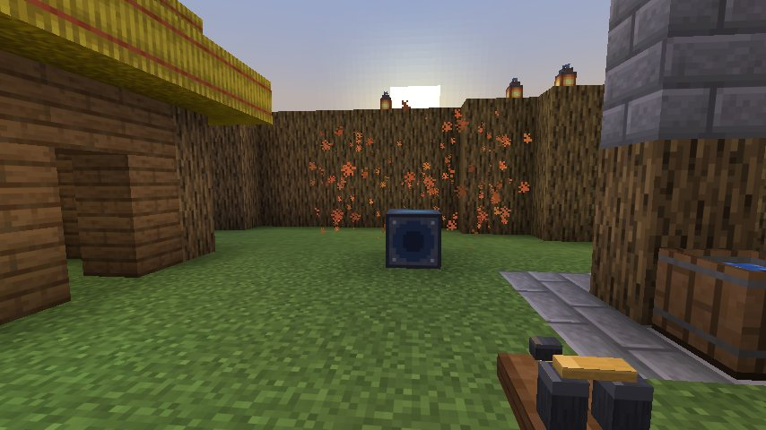
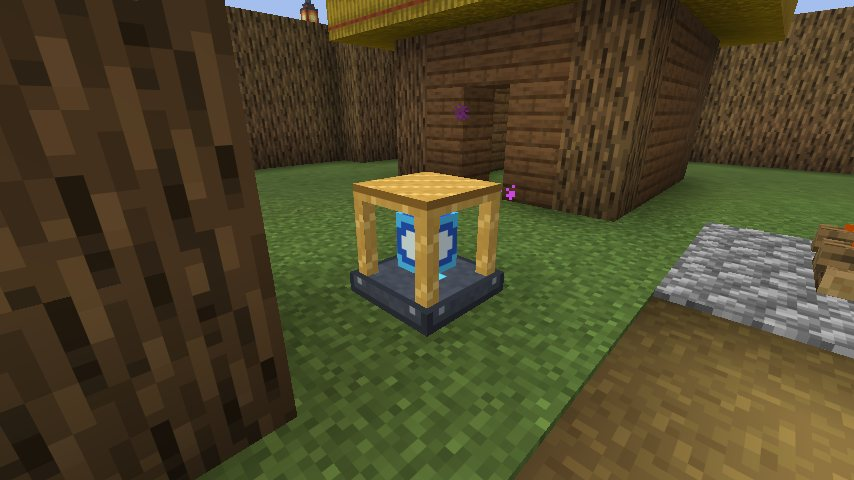

From 1000 AD to the future.
A Fabric mod for Minecraft 26.3. Start in a timber fort and invent your way through five eras.

- 1000-1400
Medieval
Charcoal clamps, bloomeries, the forge and the anvil. Wrought iron, then steel.
- 1400-1700
Gunpowder
Saltpetre beds, powder mills, muskets, cast iron and cannon.
- 1700-1900
Industrial
Coke, the Bessemer converter, steam power, rifles and the telegraph.
- 1900-2000
Modern
Motors, circuit boards, the electric arc furnace, turrets and the motorcar.
- 2000+
Futuristic
Exotic matter, power armour, plasma, and a time machine to take you home.
No XP. No research tree. You learn by doing.
Make something for the first time and the designs that use it open up. Salvage a raider's armour and you learn how it was made. Each era starts when you run its gate machine eight times.




Built for a server full of rival teams.
Every team has its own era, its own fort and its own knowledge. Race each other through history.
The Patent Office
The first team to invent the steam engine holds the patent, and the whole server hears how many centuries they beat Newcomen by.
Raids with Warlords
Every few nights raiders march on your fort, led by a named Warlord. Kill him for a banner that rallies your team.
Temporal rifts
Lightning splits the sky near your fort and leaves a barrel from your next era.
Forts, claims and wars
Settle your own hill fort, claim the land around it, and declare timed wars where the winner plunders a design.
The telegraph
Tap out a telegram in the Industrial era and it clicks out at every station in the world.
Maker's marks
Every blade carries the name of the smith who forged it. Quench a Fine one and it becomes a Masterwork.

Build machines the size of a house
The Great Blast Furnace is a four-storey firebrick tower that smelts in bulk, the Arc Furnace runs on electricity, and the Fusion Reactor is a glowing ring that powers 32 machines at once. Sneak-click a controller and glowing marks show every block still missing.


The way home
Build the Time Machine in the final era and your team goes home. The whole server hears about it.
Install in two minutes.
Works with any launcher that supports Fabric: the official launcher, Prism, MultiMC or Modrinth App.
Get Fabric
Install Fabric Loader 0.19.5 or newer for Minecraft 26.3.
Add Fabric API
Put Fabric API in your mods folder.
Drop in Tech Era
Add the Tech Era jar to mods and create a new world. The fort is built at spawn.
Download Tech Era
- Version
- Minecraft
- 26.3 (Java Edition)
- Loader
- Fabric 0.19.5+, Fabric API
- Java
- 25
This is the only official download. The mod is free to play but all rights are reserved: please don't re-upload it or bundle it into modpacks. Link here instead. Read the license.